YOUR SURVIVAL WORLD, WITH A FEW EXTRAS
A little more
Minecraft.
Fell a tree. Recover your gear. Raise a dragon.
All the useful little things, together in one Bedrock add-on.
27 features & extras to discover
WHAT'S INCLUDED
Find your next favorite feature.
Browse the overview.
Open a card to see how it works.
Enabled / Disabled shows whether a feature is available in the mod.
Everyday survival
6Less busywork. More building, exploring, and surviving.
NORMAL CREEPER DROPSDouble Creeper DropsCurrently disabled. Creepers drop their normal amount of gunpowder.Disabled
- Defeat a creeper
- Receive normal gunpowder
- Keep the usual XP and discs
Double Creeper Drops is currently disabled. Creepers use their normal gunpowder drops, including the usual Looting bonus. Music-disc drops and experience also remain unchanged.
This feature previously doubled the gunpowder from creepers. It stays listed here so you can see its current status.
HARVEST & GROW AGAINAutomatic Crop ReplantingHarvest mature crops and leave a fresh seedling behind automatically.Enabled
- Harvest a mature crop
- Keep the usual drops
- A fresh seedling starts growing
Harvest fully grown wheat, carrots, potatoes, or beetroot and a new seedling appears in its place. You keep the normal harvest drops, and replanting doesn't take an extra seed or crop from your inventory.
Breaking an immature crop behaves normally. Turn the feature off in your personal menu whenever you want to clear or redesign your farm.
ONE CLICK, BOTH DOORSDouble DoorsOpen or close a matching pair of doors together.Enabled
- Place a matching door pair
- Use either door
- Both open or close together
Interact with either half of a correctly placed double doorway and the other door follows it. Both open together, and both close together.
The doors must match in type and face the same way, with opposite hinges. Nearby doors that aren't a matching pair stay independent. You can turn this convenience off in your personal menu.
GIVE YOUR ANVIL MORE LIFEAnvil RepairRepair a worn anvil with an iron ingot instead of replacing the whole thing.Enabled
- Damaged anvil
- + 1 iron ingot → chipped
- + 1 iron ingot → good as new
Hold one iron ingot and use a chipped or damaged anvil without sneaking. One ingot repairs one damage stage.
A damaged anvil becomes chipped; another ingot returns it to normal. Disable Anvil Repair in your personal menu if you want ordinary interaction while holding iron.
LIGHT THE WAYFlashlightCarry a flashlight to shine a beam ahead while exploring dark places.Enabled
- Hold the flashlight
- Look into the darkness
- Light follows your view
1 × Torch, 2 × Iron Ingot
Craft a flashlight with two iron ingots and a torch. Hold it in your selected main-hand slot or your off hand to shine light in the direction you're looking.
The beam reaches up to 24 blocks and stops at walls. Put the flashlight away to turn it off.
REACH THAT WATERRanged Sponge PlacementPlace a dry sponge directly on water you're aiming at, up to five blocks away.Enabled
- Hold a dry sponge
- Aim at water within 5 blocks
- Use to place the sponge
Hold a dry sponge, aim at still or flowing water within five blocks, and use it. The sponge is placed at that water target, helping you reach spots that are awkward to stand beside.
Placement uses the sponge normally in Survival. Wet sponges don't work for this action. You can switch it off in your personal feature menu.
Mining & collecting
6Make every swing count, from your first tree to your next ore vein.
PICK UP A SPAWNERSilk Touch SpawnersBreak a spawner with a Silk Touch pickaxe to collect a spawner item.Enabled
- Equip a Silk Touch pickaxe
- Break the spawner
- Collect one spawner item
Use a Silk Touch pickaxe to break a spawner in Survival or Adventure mode. You'll receive one spawner item instead of losing the block entirely. Vanilla pickaxes and all six All In One pickaxe sets work.
Without Silk Touch, you don't receive the extra spawner item. You can switch this feature off in your personal feature menu.
SNEAK + AXETree FellingFell a natural tree by sneaking and breaking one of its logs with an axe.Enabled
- Sneak + break a natural log
- Connected logs and foliage fall
- Collect the tree's drops
Sneak and break a log with an axe to work through the tree's connected logs and natural foliage. Collect its drops without climbing through the canopy to reach every last block.
Extra logs use your axe's durability, including its usual Unbreaking benefit. Clearing the foliage doesn't add axe wear. This feature is intended for natural trees; turn it off in your personal menu when you want to work one block at a time.
Add TF Collector I to your axe to send the new tree drops straight into your inventory.
SNEAK + PICKAXEVein MiningMine a connected ore vein from a single starting block.Enabled
- Sneak + mine an ore
- Follow the connected vein
- Receive normal loot and XP
Sneak and mine an ore block with a suitable pickaxe to follow the connected ore around it. Stone and deepslate versions of the same ore can be collected together.
Your tool still needs to be strong enough for the ore. Fortune, Silk Touch, experience drops, and durability work as they normally do, with wear for each additional block.
Turn Vein Mining off in your personal menu for individual blocks. Add VM Collector I to your pickaxe to collect the new ore items directly.
YOUR CHOICEAuto-PickupSend new block drops straight to your inventory instead of chasing them around.Enabled
- Enable Auto-Pickup
- Break a block
- Items fill inventory; overflow stays
Enable Auto-Pickup in your personal feature menu, then break blocks as usual. Their new item drops go straight into your inventory when there's room.
Anything that won't fit stays on the ground for you to collect later. Auto-Pickup starts off, so you choose when to use it. It handles block drops rather than sweeping up every item or mob drop nearby.
AN UPGRADE FOR YOUR AXETF Collector ICollect Tree Felling drops directly into your inventory with a special axe enchantment.Enabled
- Earn or find a TF book
- Apply it to your axe
- Fell trees straight into inventory
TF Collector I works with Tree Felling to gather its new logs and foliage drops directly into your inventory. Items already on the ground are left alone, and anything that won't fit remains where it fell.
Earn a free book after 25 successful Tree Felling uses. You can also find Collector books through master librarians, fishing treasure, selected loot chests, or the special enchanting-table interaction.
Apply it: hold the axe in your main hand and the TF Collector book in your off hand, then sneak-use an anvil. It costs four levels outside Creative.
Enchanting-table route: at level 30 or higher, sneak-use the table while holding a regular book. One book, three lapis lazuli, and three levels give you one of the two Collector books.
You can switch collection off in your personal menu. To remove the custom enchantment, hold the axe and sneak-use a grindstone; its vanilla enchantments stay.
AN UPGRADE FOR YOUR PICKAXEVM Collector ICollect Vein Mining drops directly into your inventory with a special pickaxe enchantment.Enabled
- Earn or find a VM book
- Apply it to your pickaxe
- Mine ore straight into inventory
VM Collector I gathers the new item drops from Vein Mining straight into your inventory. Experience still drops in the world, and overflow stays at the ore block. It doesn't sweep up items that were already lying nearby.
Earn a free book after 25 successful Vein Mining uses. Collector books also appear through master librarians, fishing treasure, selected loot chests, and the special enchanting-table interaction.
Apply it: hold the pickaxe in your main hand and the VM Collector book in your off hand, then sneak-use an anvil. It costs four levels outside Creative.
Enchanting-table route: at level 30 or higher, sneak-use the table while holding a regular book. One book, three lapis lazuli, and three levels give you one of the two Collector books.
Use your personal menu to switch collection off. Sneak-use a grindstone while holding the pickaxe to remove the custom enchantment while keeping its vanilla enchantments.
Recovery & visibility
2Keep track of your drops and find your way back after a death.
A SECOND CHANCEGrave RecoveryKeep your belongings and experience in a locked grave after you die, then use your key to recover them.Enabled
- Your grave keeps your gear
- Follow your Grave Key
- Use the key to recover it
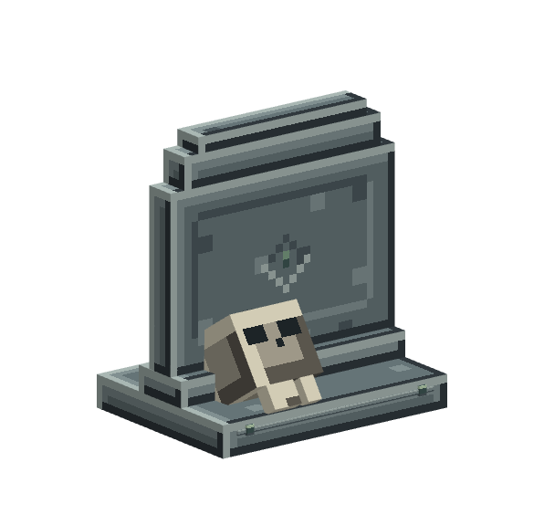
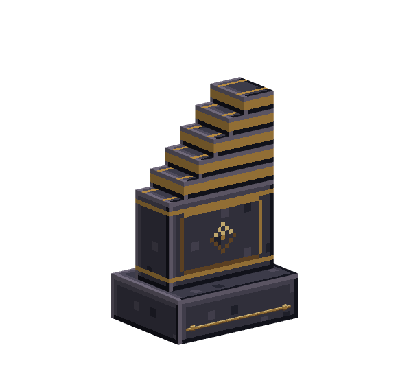
 Blank Grave Key
Blank Grave Key1 × Gold Nugget, 1 × Gold Ingot, 1 × Bone
A grave keeps your inventory, worn equipment, off-hand item, and experience together after death. Your matching Grave Key helps you find it by showing its location, dimension, and distance. Use the key at the grave to recover your belongings.
Only the matching key opens that grave. If your inventory can't hold everything, the remaining items stay safely inside; your experience returns once all the items fit.
Lost your key? Craft a blank replacement with a gold nugget, a gold ingot, and a bone. Use it on the grave to bind it, then use it again to recover your gear.
Graves have eight memorial styles, with the appearance chosen according to your level.
KNOW WHAT YOU'RE PICKING UPFloating Item NamesSee readable names and stack sizes above nearby dropped items.Enabled
Nearby dropped items show their name and stack quantity, making it easier to spot the loot you want. Renamed items keep their custom name.
Normally you'll see up to 10 stacks within 12 blocks, with labels hidden behind terrain. Each player can turn their own labels on or off in the personal feature menu.
Dragons & companions
3A new reason to return to the End, and company for the journey.
RETURN TO THE ENDRepeatable Dragon EggsEarn a new dragon egg every time you defeat the Ender Dragon.Enabled
- Defeat the Ender Dragon
- Obtain a new dragon egg
- Keep it or raise a companion
Every completed Ender Dragon victory makes one new dragon egg obtainable, giving you a reason to take on the fight again. Eggs you've already collected are left alone.
The usual rematch, experience, and gateway rewards continue as normal. Save an egg as a trophy—or use one to craft your own Pet Dragon.
RAISE YOUR OWN DRAGONPet DragonRaise a baby dragon into a flying mount that follows you on your adventures.Enabled
- Craft & meet your baby
- Grow for 60 loaded minutes
- Ride your adult dragon
4 × Phantom Membrane, 4 × End Crystal, 1 × Dragon Egg
Craft the spawn egg using one dragon egg, four end crystals, and four phantom membranes, then use it beside a clear block to meet your baby dragon.
Your dragon grows up after 60 minutes in loaded areas. Feeding a baby popped chorus fruit takes 72 seconds off that wait per fruit. Once grown, it becomes a rideable flying companion; popped chorus fruit also restores six health to an adult.
Sneak-interact to switch between Follow and Stay. Your selected mode appears in chat. You can own one Pet Dragon, within the overall limit of three pets.
Other players can't hurt your pet by hitting it. If attacked, it defends itself against that attacker for 15 seconds, then returns to its selected mode.
If your dragon dies, it drops one dragon egg, one end crystal, and one phantom membrane as a partial crafting refund.
A FRIENDLIER ZOMBIEPet ZombieRaise an owner-bound zombie companion that helps you fight once it grows up.Enabled
- Craft & meet your baby
- Grow for 20 loaded minutes
- An adult companion helps in combat
8 × Rotten Flesh, 1 × Bone
Surround one bone with eight rotten flesh to craft a spawn egg, then use it to meet your baby Pet Zombie. It grows into an adult after 20 minutes in loaded areas. Feed the baby rotten flesh to shorten that wait by two minutes per piece.
A grown zombie in Follow mode helps its owner in combat. Rotten flesh restores four health to an adult. Sneak-interact to choose Follow or Stay, with your selection shown in chat.
You can own one Pet Zombie, within the overall limit of three pets. Other players' hits don't reduce its health; it defends itself against that attacker for 15 seconds, then returns to its selected mode.
If your zombie dies, it returns one bone and two rotten flesh as a partial crafting refund.
Equipment
6Six familiar materials. Six complete sets of tools and armor.
CRYSTAL VIOLETAmethyst EquipmentTurn amethyst shards into a complete set of tools and armor with violet crystal details.Enabled

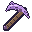
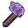
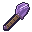
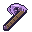
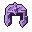
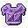
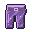
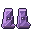
- Iron-level mining
- 768 tool uses
- 16 full-set armor points
Give your amethyst a new purpose with five tools and four armor pieces. The tools have iron-level mining strength with extra durability, while the armor offers 16 total protection points for a full set.
Use the familiar crafting shapes with amethyst shards in place of the usual material. Repair pieces with shards, add enchantments, and customize the armor with trims. The axe and pickaxe also work with Tree Felling, Vein Mining, and the matching Collector enchantments.
BEVELED GREENEmerald EquipmentSpend emeralds on a full set of strong green tools and matching armor.Enabled

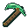
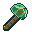
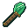
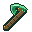
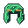
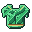
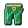
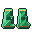
- Diamond-level mining
- 1,280 tool uses
- 20 full-set armor points
Emerald equipment gives you five tools and four armor pieces with rich green, beveled details. Its tools offer diamond-level mining strength, while a full armor set provides 20 protection points.
Craft with the familiar tool and armor shapes using emeralds. Repair pieces with emeralds, enchant them, and add armor trims. The axe and pickaxe support Tree Felling, Vein Mining, and their Collector enchantments.
DEEP BLUE & GOLDLapis EquipmentCraft a complete blue-and-gold equipment set from lapis lazuli.Enabled

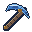
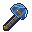
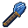
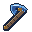
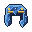
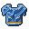
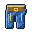
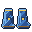
- Iron-level mining
- 512 tool uses
- 15 full-set armor points
Make five tools and four armor pieces with deep-blue surfaces and gold inlays. Lapis tools have iron-level mining strength, and the complete armor set supplies 15 protection points.
Use lapis lazuli in the familiar crafting patterns. Repair with lapis, enchant the pieces, and add trims to the armor. Your lapis axe and pickaxe also work with Tree Felling, Vein Mining, and their matching Collectors.
PALE FACETED STONENether Quartz EquipmentUse nether quartz for pale tools and armor with warm binding details.Enabled

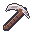
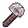
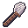
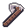
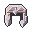
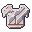
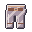
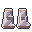
- Iron-level mining
- 384 tool uses
- 13 full-set armor points
Build a matching set of five tools and four armor pieces from nether quartz. The pale, faceted tools have iron-level mining strength, and a full set of armor gives 13 protection points.
Craft the standard tool and armor shapes using nether quartz. Quartz repairs the pieces; enchantments and armor trims help you make them your own. The axe and pickaxe work with Tree Felling, Vein Mining, and the matching Collector enchantments.
SEA-GREEN SCALESPrismarine EquipmentCraft sea-green tools and armor from prismarine shards.Enabled

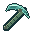
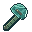
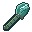
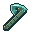
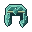
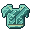
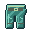
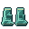
- Diamond-level mining
- 1,024 tool uses
- 18 full-set armor points
Turn prismarine shards into five tools and four armor pieces with a sea-green, scaled look. The tools have diamond-level mining strength, and the complete armor set provides 18 protection points.
Use familiar crafting shapes, repair with prismarine shards, add enchantments, and decorate armor with trims. Your prismarine axe and pickaxe also support Tree Felling, Vein Mining, and their Collector enchantments.
CRIMSON CIRCUITSRedstone EquipmentPut spare redstone dust to work as a complete crimson equipment set.Enabled

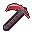
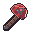
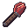
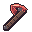
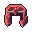
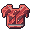
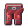
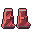
- Stone-level mining
- 192 tool uses
- 11 full-set armor points
Make five tools and four armor pieces with crimson surfaces and circuit details. Redstone tools have stone-level mining strength, while the full armor set gives 11 protection points.
Craft using redstone dust in the familiar patterns and use more dust for repairs. The pieces accept enchantments and the armor accepts trims. The axe and pickaxe work with Tree Felling, Vein Mining, and matching Collectors when the tool is suitable for the block.
Flight
1Take a friend aboard your own flying saucer.
TAKE A FRIEND INTO THE SKYUFOPilot your own two-seat flying saucer and use its tractor beam to carry a mob or player.Enabled
- Deploy your saucer
- Invite a passenger & take off
- Aim, capture & release
 UFO Capsule
UFO Capsule2 × Gold Block, 1 × Tinted Glass, 2 × Netherite Ingot, 1 × Beacon, 2 × Iron Block, 1 × Redstone Block
3 × Copper Ingot, 1 × Amethyst Shard, 2 × Redstone Dust, 1 × Nether Quartz
Craft a UFO Capsule and deploy it beside a clear landing area: you'll need a seven-by-seven-block footprint and four blocks of headroom. You can have one active UFO of your own.
Bring a friend: while your UFO is empty, stand within eight blocks and use the Tractor Beam Controller while aiming at the player you want to invite. Board first as the owner, then let your invited passenger take the second seat.
Fly: use the normal mounted movement and look controls. Jump raises the craft; the descend action lowers it. The owner pilots while the passenger enjoys the ride.
Use the tractor beam: while piloting, aim the controller at an eligible mob or player within 20 blocks and use it. It carries one target beneath the craft; use it again to release them with five seconds of Slow Falling. Walls block the beam, and bosses, pets, riders, and other vehicles can't be captured.
Pack it away: land, stop, empty both seats, then sneak-interact to get your capsule back. If the craft is destroyed, it returns one gold block, one netherite ingot, and one iron block instead.
Personal touches
3Your settings, your look, and a little more life in the world.
PLAY YOUR WAYPersonal Feature MenuChoose which survival conveniences you want with 11 personal switches in one menu.Enabled
- Open your personal menu
- Choose your conveniences
- Your preferences are remembered
Enter /all_in_one:my_features in game to open your personal feature menu. Each switch has a description so you can decide what suits your play style.
Choose your own Tree Felling, Vein Mining, crop replanting, double doors, anvil repair, ranged sponge placement, Silk Touch spawners, TF Collector, VM Collector, Auto-Pickup, and floating item names. Your choices don't change anyone else's settings, and are remembered when you return.
Auto-Pickup starts off; the other ten switches start on. Collector switches control collection only—you still need the matching enchantment on your tool.
A LITTLE MORE LIFESleep & Idle IndicatorsGentle floating Zs show when a mob is sleeping or a player has gone idle.Enabled
Pale blue-and-white Zs appear above sleeping mobs and players. A player who's been inactive for five minutes also gets the resting effect.
Moving, looking around, changing hotbar slots, or taking an action clears the player's idle indicator. It's a small visual touch that helps you see who's taking a break.
AN OPTIONAL NEW LOOKAll In One Adventurer SkinAn adventurer outfit inspired by the pack's mining, recovery, and survival features.Enabled

Wear the All In One theme with a hood, skull-style mask, creeper chest design, cyan mining arm, redstone arm, golden grave-key details, and amethyst accents.
The skin uses the classic wide-arm shape. It's an optional cosmetic you can enjoy independently of the gameplay features.
No features found.
Try a different word or browse all categories.
Make it yours.
Choose the conveniences that suit your play style with your own personal feature menu.